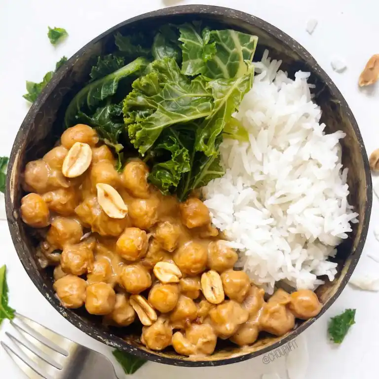

Ragoût de pois chiche au lait de coco et beurre de cacahuète

Une recette de ragoût de pois chiche réalisée avec du lait de coco et beurre de cacahuète
il s’agit ici d’un ragoût à base de pois chiche, de lait de coco, de beurre de cacahuète et de sauce soja. Il est accompagné de riz complet et de légumes à choix.
Ingrédients
- 250g de pois chiches cuits (c’est-à-dire une boite de conserve ou 120g cru)
- 150 à 200g de légumes verts à choix (ici chou kale)
- 100ml de lait de coco
- 100ml d’eau
- 75g de riz complet (poids cru)
- 30ml de sauce soja salée
- 20g de beurre de cacahuète onctueux
- 1 cuillère à café de maïzena (5g)
- Ail en poudre et gingembre
Étapes
- Cuire le riz et les légumes séparément. Il n’est pas nécessaire de les saler.
- Dans une poêle, chauffer à feu doux le beurre de cacahuète, l’eau, la sauce soja, le gingembre et l’ail en poudre.
- Mélanger jusqu’à obtenir un mélange homogène.
- Incorporer ensuite le lait de coco et la maïzena. Augmenter la température du feu et remuer encore.
- Égoutter les pois chiches en conserve et les rincer.
- Ajouter les pois chiches à la poêle et remuer jusqu’à ce que la sauce au beurre de cacahuète épaississe. Il faut compter 3 à 5 minutes.
- Servir dans une assiette le riz, les légumes et les pois chiches au beurre de cacahuète et lait de coco.
Conseil pratique
Il est possible de remplacer les pois chiches par des haricots rouges ou par du poulet/dinde pour une version avec de la viande.